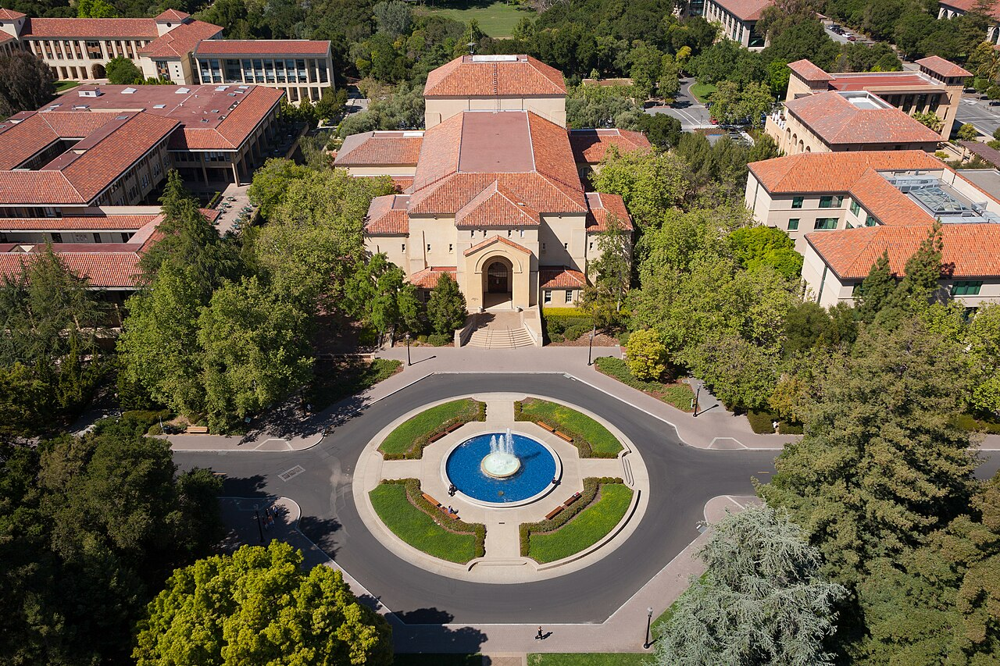

Choose a topic / Choisis un thème :
Sources : facts.stanford.edu (campus, budget, schools, alumni, Nobel) · financialaid.stanford.edu (aid) · news.stanford.edu (2025-26 rates) · gostanford.com (139 NCAA titles) · stanfordresearchpark.com · ahro.slac.stanford.edu (first US website) · orsl.stanford.edu (Memorial Church)
1/1